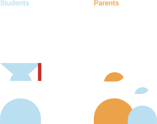

Measuring Canada’s culture of innovation
Ever wondered where the recycling blue box came from? Or the life jacket? Or Kids Help Phone? These are Canadian innovations that enhance — and in some cases save — lives every day. And they were born out of a culture that encourages and enables social innovation.
But we’re in unprecedented times. As we enter into a period of economic and social recovery from the coronavirus pandemic, we’ll need even more of this level and quality of social innovation to help communities build back better. Are we prepared?
For its second annual Canada’s Culture of Innovation report, the Rideau Hall Foundation partnered with Edelman Public Relations to survey people across Canada. The Foundation gained a valuable understanding of how the country is faring on our culture of innovation — and, particularly, how this kind of culture could produce solutions to our most pressing, complex social problems.
Future of Good partnered with Rideau Hall Foundation to bring you this breakdown of the report’s findings.
What is social innovation?
Social Innovation /ˈsəʊʃ(ə)l
New or improved social practices contributing to our success as a country, putting people and our planet first, in a more effective or impactful way than pre-existing solutions.


What makes up innovation?
For the second year in a row, the report found that six factors in particular are most central to fostering a culture of innovation.
Diversity
Collaboration
Curiosity
Risk Taking
Openness to Technology
Creativity
What does a culture of innovation mean to Canadians?
In February 2020, Rideau Hall Foundation asked survey participants for what they value innovation most highly. They identified trends that can help us understand the way Canada’s innovation culture was developing before COVID-19, and the ways in which Canadians might be ready to use innovation for society’s recovery and regeneration post-pandemic.
41%
Healthier people
Canadians say innovation is most useful for making us physically healthier. An example of this kind of social innovation might be using 3D printing technology to quickly produce low-cost medical devices in communities with unreliable access to this equipment.
27%
Happy people
Canadians say innovation is most useful for making us physically healthier. An example of this kind of social innovation might be using 3D printing technology to quickly produce low-cost medical devices in communities with unreliable access to this equipment.
9%
Social mobility
Social mobility didn’t make the top five, but showed significant growth from last year in the number of Canadians who say innovation is valuable for creating tools and opportunities for improving social status. An example might be a program that provides people experiencing homelessness with professional clothing for job interviews.
Innovative values
The values Canadians reported are key to fostering social innovation in particular — something our country will desperately need in order to bounce back from the pandemic. According to the report, diversity and collaboration are some of Canadians’ strongest values when it comes to innovation culture. They also happen to be some of the most essential ingredients to creating solutions that improve people’s lives.
Core values
People across the country valued collaboration across disciplines and diversity of perspectives highest for fostering a culture of innovation.
Do Canadians have the tools they need to create an innovation culture?
More good news: the next generation is well-equipped to foster a meaningful culture of innovation moving forward — and to use it to address the pandemic’s lasting social impacts. Younger Canadians are poised to foster a meaningful culture of innovation moving forward.
Digital literacy
Millennials and Gen Z Canadians feel more comfortable with the digital world than the Boomer generation.
Education on innovation
Today’s students feel far more empowered by teachers to think in innovative ways than their parents did.
Empowerment for the greater good
Students today also feel more encouraged by educators to use innovation to make a positive contribution to the world and their communities than their parents did.
When it comes to the digital world, young people are significantly more digitally literate than previous generations. And younger generations receive far more education about innovation — encouragement of innovative thinking and education on innovative people — than their parents and grandparents did.
What now?
As Canadians grapple with one of the most serious social challenges we’ve ever faced as a country, building and continually fostering a stronger culture of social innovation for years to come is crucial. Are we ready? According to the research, we just might be. A strong innovation culture in the North, a younger generation that’s ready to implement innovation in new and exciting ways, and an emphasis on diversity and collaboration will all be carried into a post-pandemic world, where a culture of
social innovation will be necessary to address the country’s toughest challenges and support those most impacted by the crisis.
Stay tuned for three more stories in partnership with the Rideau Hall Foundation, exploring what local and Indigenous innovation look like, and why diversity and collaboration are key to approaching the most complex social issues.